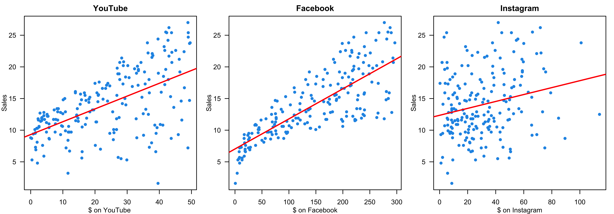
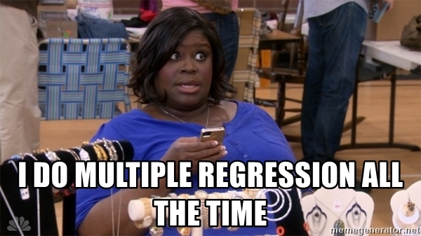
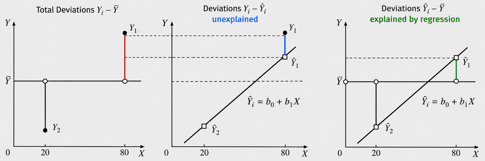

Multiple Linear Regression
MATH 4780/MSSC 5780 Regression Analysis
Dr. Cheng-Han Yu
Department of Mathematical and Statistical Sciences
Marquette University
Department of Mathematical and Statistical Sciences
Marquette University
Multiple Linear Regression (MLR)
Why Multiple Regression?
- Our target response may be affected by several factors.
- Total sales \((Y)\) and amount of money spent on advertising on YouTube (YT) \((X_1)\), Facebook (FB) \((X_2)\), Instagram (IG) \((X_3)\).

- Predict sales based on the three advertising expenditures and see which medium is more effective.
Fit Separate Simple Linear Regression Models
Fit three separate independent SLR models:

❌ Fitting a separate SLR model for each predictor is not satisfactory.
Don’t Fit a Separate Simple Linear Regression
- 👉 How to make a single prediction of sales given levels of the 3 advertising media budgets?
- How to predict the sales when the amount spent on YT is 50, 100 on FB and 30 on IG?
- 👉 Each regression equation ignores the other 2 media in forming coefficient estimates.
- The effect of FB advertising on sales may be increased or decreased when YT and IG advertising are in the model.
- IG advertising may have no impact on sales when YT and FB advertising are in the model.
SLR: Each slope \(\beta_k\) is a marginal comparison. It does not adjust for the other advertising channels.
MLR: \(\beta_k\) is a conditional comparison. \(\beta_k\) is the expected difference in sales, comparing two companies who differ by one unit in spending in channel \(k\) while being equal in all the other channels.
- 👍👍 Better approach: extend the SLR model so that it can directly accommodate multiple predictors.
I hope you don’t feel…

What I hope is…

Multiple Linear Regression (MLR) Model
- We have \(k\) distinct predictors. The (population) multiple linear regression model: \[Y_i= \beta_0 + \beta_1X_{i1} + \beta_2X_{i2} + \dots + \beta_kX_{ik} + \epsilon_i\]
- \(X_{ij}\): \(j\)-th regressor value on \(i\)-th measurement, \(j = 1, \dots, k\).
- \(\beta_j\): \(j\)-th regression coefficient.
- In the advertising example, \(k = 3\) and \[\texttt{sales} = \beta_0 + \beta_1 \times \texttt{YouTube} + \beta_2 \times \texttt{Facebook} + \beta_3 \times \texttt{Instagram} + \epsilon\]
- Assumptions as SLR
- \(\epsilon_i \stackrel{iid}{\sim} N(0, \sigma^2)\), the remaining variation not explained by the model.
- \(E(Y\mid X_1,X_2,\ldots,X_k) =\beta_0+\beta_1X_1+\cdots+\beta_kX_k\)
How many parameters are there in the model?
Sample MLR Model
- Given the data \((x_{11}, \dots, x_{1k}, y_1), (x_{21}, \dots, x_{2k}, y_2), \dots, (x_{n1}, \dots, x_{nk}, y_n),\)
- The sample MLR model: \[\begin{align} y_i &= \beta_0 + \beta_1x_{i1} + \beta_2x_{i2} + \dots + \beta_k x_{ik} + \epsilon_i \\ &= \beta_0 + \sum_{j=1}^k\beta_j x_{ij} + \epsilon_i, \quad i = 1, 2, \dots, n \end{align}\]
Regressors
|
|||||
|---|---|---|---|---|---|
| Observation, i | Response, y | x1 | x2 | ⋯ | xk |
| 1 | y1 | x11 | x12 | ⋯ | x1k |
| 2 | y2 | x21 | x22 | ⋯ | x2k |
| ⋮ | ⋮ | ⋮ | ⋮ | ⋮ | ⋮ |
| n | yn | xn1 | xn2 | ⋯ | xnk |
Regression Hyperplane
- SLR: regression line
- MLR: regression hyperplane or response surface
- \(y = \beta_0 + \beta_1x_1 + \beta_{2}x_2 + \epsilon\)
- \(E(y \mid x_1, x_2) = 50 + 10x_1 + 7x_2\)


Response Surface : Interaction Model
- \(y = \beta_0 + \beta_1x_1 + \beta_{2}x_2 + \beta_{12}x_1x_2 + \epsilon\)
- This is in fact a linear regression model: let \(\beta_3 = \beta_{12}, x_3 = x_1x_2\).
- \(E(y \mid x_1, x_2) = 50 + 10x_1 + 7x_2 + 5x_1x_2\)
- 😎 🤓 A linear model generates a nonlinear response surface!


Response Surface : 2nd Order with Interaction Model
- \(y = \beta_0 + \beta_1x_1 + \beta_{2}x_2 + \beta_{11}x_1^2 + \beta_{22}x_2^2 + \beta_{12}x_1x_2 + \epsilon\)
- \(E(y) = 800+10x_1+7x_2 -8.5x_1^2-5x_2^2- 4x_1x_2\)
- 😎 🤓 A linear regression model can describe a complex nonlinear relationship between the response and predictors!


Point Estimation of Model Parameters
Least Square Estimation
\[\begin{align} y_i &= \beta_0 + \beta_1x_{i1} + \beta_2x_{i2} + \dots + \beta_k x_{ik} + \epsilon_i \\ &= \beta_0 + \sum_{j=1}^k\beta_j x_{ij} + \epsilon_i, \quad i = 1, 2, \dots, n \end{align}\]
- The least-squares function is \[SS_{res}(\alpha_0, \alpha_1, \dots, \alpha_k) = \sum_{i=1}^n\left(y_i - \alpha_0 - \sum_{j=1}^k\alpha_j x_{ij}\right)^2\] The function \(SS_{res}(\cdot)\) must be minimized with respect to the coefficients, i.e., \[(b_0, b_1, \dots, b_k) = \underset{{\alpha_0, \alpha_1, \dots, \alpha_k}}{\mathrm{arg \, min}} SS_{res}(\alpha_0, \alpha_1, \dots, \alpha_k)\]
Geometry of Least Square Estimation

Least-squares Normal Equations
\[\begin{align} \left.\frac{\partial S}{\partial\alpha_0}\right\vert_{b_0, b_1, \dots, b_k} &= -2 \sum_{i=1}^n\left(y_i - b_0 - \sum_{j=1}^k b_j x_{ij}\right) = 0\\ \left.\frac{\partial S}{\partial\alpha_j}\right\vert_{b_0, b_1, \dots, b_k} &= -2 \sum_{i=1}^n\left(y_i - b_0 - \sum_{j=1}^k b_j x_{ij}\right)x_{ij} = 0, \quad j = 1, 2, \dots, k \end{align}\]
- \(p = k + 1\) equations with \(p\) unknown parameters.
- The ordinary least squares estimators are the solutions to the normal equations.
🍹 🍺 🍸 🥂 I buy you a drink if you solve the equations for \(k \ge 2\) by hand without using matrix notations or operations!
Delivery Time Data
'data.frame': 25 obs. of 3 variables:
$ time : num 16.7 11.5 12 14.9 13.8 ...
$ cases : int 7 3 3 4 6 7 2 7 30 5 ...
$ distance: int 560 220 340 80 150 330 110 210 1460 605 ...- \(y\): the amount of time required by the route driver to stock the vending machines with beverages
- \(x_1\): the number of cases stocked
- \(x_2\): the distance walked by the driver
time cases distance
1 16.7 7 560
2 11.5 3 220
3 12.0 3 340
4 14.9 4 80
5 13.8 6 150
6 18.1 7 330
7 8.0 2 110
8 17.8 7 210
9 79.2 30 1460
10 21.5 5 605
11 40.3 16 688
12 21.0 10 215
13 13.5 4 255
14 19.8 6 462
15 24.0 9 448
16 29.0 10 776
17 15.3 6 200
18 19.0 7 132
19 9.5 3 36
20 35.1 17 770
21 17.9 10 140
22 52.3 26 810
23 18.8 9 450
24 19.8 8 635
25 10.8 4 150Scatterplot Matrix
pairs(delivery_data)
3D Scatterplot
SLR Fitting
\[\widehat{\text{time}} = 3.32 + 2.18 \text{ cases}\]
\[\widehat{\text{time}} = 4.96 + 0.04 \text{ distance}\]

MLR Fitting
(Intercept) cases distance
2.341 1.616 0.014 \[\widehat{\text{time}} = 2.34 + 1.62 \text{ cases} + 0.014 \text{ distance}\]
\(b_1\): predicted average delivery time difference for one more case, comparing deliveries with the same modeled distance
\(b_2\): predicted average delivery time difference for one more foot, comparing deliveries with the same modeled number of cases
\(b_0\): The predicted time with no number of cases of product stocked and no distance walked by the driver is expected to be 2.34 minutes. (Make sense?!)
Visualing the Fitted Model


Fitted Regression Plane
Estimation of \(\sigma^2\)
\(SS_{res} = \sum_{i=1}^ne_i^2 = \sum_{i=1}^n(y_i - \hat{y}_i)^2\).
\(S^2 = MS_{res} = \dfrac{SS_{res}}{n - p}\) with \(p = k + 1\).
The residual standard error \(S\) is in the response delivery-time units.
Roughly 68% of the outcomes will fall between \(\pm 3.3\) of the fitted line.
summ_delivery <- summary(fit_delivery)
summ_delivery$sigma[1] 3.3Confidence Interval
CI for Coefficients
CI for the Mean Response
PI for New Observations
Wald CI for Coefficients
The \((1-\alpha)100\%\) Wald CI for \(\beta_j\), \(j = 0, 1, \dots, k\) is \[\left(b_j- t_{\alpha/2, n-p}~se(b_j), \quad b_j + t_{\alpha/2, n-p}~ se(b_j)\right)\]
(ci <- confint(fit_delivery)) 2.5 % 97.5 %
(Intercept) 0.0668 4.616
cases 1.2618 1.970
distance 0.0069 0.022- These are marginal CIs seperately for each \(b_j\).
These intervals do not take correlation of coefficients into account.
When we want to do interval estimation for several coefficients together at the same time, these intervals are not that precise.
Correlated Coefficients
## correlation matrix
cov2cor(V) (Intercept) cases distance
(Intercept) 1.00 -0.25 -0.22
cases -0.25 1.00 -0.82
distance -0.22 -0.82 1.00\(b_1\) and \(b_2\) are negatively correlated.
Individual CI ignores the correlation between \(b_j\)s.
How do we specify a confidence level that applies simultaneously to a set of interval estimates? For example, a \(95\%\) confidence “interval” for both \(b_1\) and \(b_2\).
Confidence Region
- The \((1-\alpha)100\%\) CI for a set of \(b_j\)s will be an elliptically-shaped region!

Some points (red) within the marginal intervals are implausible according to the joint region.
The joint region includes values of the coefficient for cases (black), for example, that are excluded from the marginal interval.
CI for the Mean Response \(E(y \mid {\bf x}_0)\)
- The predicted value at a new point \({\bf x}_0 = (x_{01}, x_{02}, \dots, x_{0k})\) is \[\hat{y}_0 = b_0 + b_1x_{01} + \cdots + b_kx_{0k}\]
- The \((1-\alpha)100\%\) CI for \(E(y \mid {\bf x}_0)\) is \[\left(\hat{y}_0 - t_{\alpha/2, n-p} ~ se(\hat{y}_0), \quad \hat{y}_0 + t_{\alpha/2, n-p} ~ se(\hat{y}_0)\right)\]
predict(fit_delivery,
newdata = data.frame(cases = 8, distance = 275),
interval = "confidence", level = 0.95) fit lwr upr
1 19 18 21PI for New Observations
- Predict the future observation \(y_0\) when \({\bf x} = {\bf x}_0\).
- The \((1-\alpha)100\%\) PI for \(y_0\) is \[\left(\hat{y}_0 - t_{\alpha/2, n-p} ~se(y_0 - \hat{y}_0), \quad \hat{y}_0 + t_{\alpha/2, n-p} ~se(y_0 - \hat{y}_0)\right)\]
predict(fit_delivery,
newdata = data.frame(cases = 8, distance = 275),
interval = "predict", level = 0.95) fit lwr upr
1 19 12 26Predictor Effect Plots
A complete picture of the regression surface requires drawing a \(p\)-dimensional graph.
Predictor effect plots look at 1 or 2D plots for each predictor.
- The predictor effect plot for \(x_1\):
- fix the values of all other predictors ( \(x_2\) in the example)
- substitute these fixed values into the fitted regression equation.
- Fix \(x_2\) at its average, \(\hat{y} = 2.34 + 1.62 ~x_1 + 0.014 (409.28)\)
Same slope for any choice of fixed values of other predictors.
The intercepts depend on the values of other predictors.
Predictor Effect Plots
library(effects)
plot(effects::predictorEffects(mod = fit_delivery))

Hypothesis Testing
Test for Significance of Regression
Tests on Individual Coefficients
Tests on Subsets of Coefficients (Later)
Partition of Deviation
Total deviation = Deviation explained by regression + Unexplained deviation
\((y_i - \overline{y}) = (\hat{y}_i - \overline{y}) + (y_i - \hat{y}_i)\)
\((19 - 9) = (13 - 9) + (19 - 13)\)

Sum of Squares (SS)
\(\sum_{i=1}^n(y_i - \overline{y})^2 = \sum_{i=1}^n(\hat{y}_i - \overline{y})^2 + \sum_{i=1}^n(y_i - \hat{y}_i)^2\)
Total SS \((SS_T)\) = Regression SS \((SS_R)\) + Residual SS \((SS_{res})\)
\(df_T = df_R + df_{res}\)
| Source of Variation | SS | df | MS |
|---|---|---|---|
| Regression | \(SS_R\) | \(k\) | \(MS_R\) |
| Residual | \(SS_{res}\) | \(n-k-1\) | \(MS_{res}\) |
| Total | \(SS_{T}\) | \(n-1\) |
Test for Significance of Regression
Test for significance: Determine if there is a linear relationship between the response and any of the regressors.
\(H_0: \beta_1 = \beta_2 = \cdots = \beta_k = 0 \quad H_1: \beta_j \ne 0 \text{ for at least one } j\)
| Source of Variation | SS | df | MS | F | \(p\)-value |
|---|---|---|---|---|---|
| Regression | \(SS_R\) | \(k\) | \(MS_R\) | \(\frac{MS_R}{MS_{res}} = F_{test}\) | \(P(F_{k, n-k-1} > F_{test})\) |
| Residual | \(SS_{res}\) | \(n-k-1\) | \(MS_{res}\) | ||
| Total | \(SS_{T}\) | \(n-1\) |
- Reject \(H_0\) if \(F_{test} > F_{\alpha, k, n - k - 1}\).
Wrong ANOVA Table
| Source of Variation | SS | df | MS | F | \(p\)-value |
|---|---|---|---|---|---|
| Regression | \(SS_R\) | \(k\) | \(MS_R\) | \(\frac{MS_R}{MS_{res}} = F_{test}\) | \(P(F_{k, n-k-1} > F_{test})\) |
| Residual | \(SS_{res}\) | \(n-k-1\) | \(MS_{res}\) | ||
| Total | \(SS_{T}\) | \(n-1\) |
anova(fit_delivery) ## This is for sequential F-testAnalysis of Variance Table
Response: time
Df Sum Sq Mean Sq F value Pr(>F)
cases 1 5382 5382 506.6 < 2e-16 ***
distance 1 168 168 15.8 0.00063 ***
Residuals 22 234 11
---
Signif. codes: 0 '***' 0.001 '**' 0.01 '*' 0.05 '.' 0.1 ' ' 1- This is so called Type-I ANOVA table for a sequential F-test, which is NOT what we want.
ANOVA Table: Null vs. Full
Testing coefficients is like model comparison: Compare the full model with the model under \(H_0\)!
Full model: including both
casesanddistancepredictorsNull model: no predictors \((\beta_1 = \beta_2 = 0)\)
| Source of Variation | SS | df | MS | F | \(p\)-value |
|---|---|---|---|---|---|
| Regression | 5551 | 2 | 2775 | 261 | 4.7e-16 |
| Residual | 234 | 22 | 10.6 | ||
| Total | 5785 | 24 |
\(R^2\) and Adjusted \(R^2\)
-
\(R^2 = \dfrac{SS_R}{SS_T} = 1 - \dfrac{SS_{res}}{SS_T}\)
- accesses how well the regression model fits the data.
- measures the proportion of variability in \(Y\) that is explained by the regression or the \(k\) predictors.
- The model with one additional predictor always gets a higher \(R^2\).
Occam’s Razor: Don’t use a complex model if a simpler model can perform equally well!
-
Adjusted \(R^2\)
- \(R^2_{adj} = 1 - \dfrac{SS_{res}/(n-p)}{SS_T/(n-1)}\)
- applies a penalty (through \(p\)) for number of variables included in the model.
Adjusted \(R^2\) Example
- For a model with 3 predictors, \(SS_{res} = 90\), \(SS_T = 245\), and \(n = 15\). \[R^2_{adj} = 1 - \frac{90/(15-4)}{245/(15-1)} = 0.53\]
- The 4-th regressor is added into the model, and \(SS_{res} = 88\) (always decreases). Then \[R^2_{adj} = 1 - \frac{88/(15-5)}{245/(15-1)} = 0.49\]
Intuition: The new added regressor should have explanatory power for \(y\) large enough, so that \(MS_{res}\) is decreased.
summ_delivery...
Residual standard error: 3.3 on 22 degrees of freedom
Multiple R-squared: 0.96, Adjusted R-squared: 0.956
...Tests on Individual Regression Coefficients
- Hypothesis test on any single regression coefficient.
- \(H_0: \beta_{j} = 0 \quad H_1: \beta_j \ne 0\)
- \(t_{test} = \frac{b_j}{se(b_j)}\)
- Reject \(H_0\) if \(|t_{test}| > t_{\alpha/2, n-k-1}\)
- This is a partial test: a test of the contribution of \(X_j\) given ALL other regressors in the model.
summ_delivery$coefficients Estimate Std. Error t value Pr(>|t|)
(Intercept) 2.341 1.0967 2.1 4.4e-02
cases 1.616 0.1707 9.5 3.3e-09
distance 0.014 0.0036 4.0 6.3e-04Statistical Significance vs. Practical Importance
- The test \(H_0:\beta_j = 0\) will always be rejected as long as the sample size is large enough, even \(x_j\) has a very small or no association with \(y\).
- Consider the practical significance of the result, not just the statistical significance.
- Use the confidence interval to draw conclusions instead of relying only p-values.
A treatment is estimated to increase earnings by $10 per year with a standard error of $2, this would be statistically but not practically significant.
An estimate of $10000 with a standard error of $10000 would not be statistically significant, but it has the possibility of being important in practice.
Non-significance is Not the Same as Zero
If the sample size is small, there may not be enough evidence to reject \(H_0:\beta_j = 0\).
DON’T immediately conclude that the variable has no association with the response.
-
A fair summary is that the results are uncertain
- There may be a linear (positive or negative) association that is just not strong enough to detect given your data, or there may be a non-linear association.
Extrapolation
- In MLR, it’s easy to inadvertently extrapolate since the regressors jointly define the region containing the data.

Holding All Others Constant??
- It’s not always possible to change one predictor while holding all others constant!
We interpret regression slopes as comparisons of individuals that differ in one predictor while being at the same levels of the other predictors.
Polynomial regression: \(y = \beta_0 + \beta_1 x +\beta_2 x^2 +\epsilon\)
Interaction: \(y = \beta_0 + \beta_1 x_1 + \beta_2 x_2 + \beta_3 x_1x_2 + \epsilon\)
Comparisons Between Units
- A regression only tells us about comparisons between units, NOT about changes within units.
\[\text{kid_score} = 26 + 0.6 \text{ mom_IQ} + \text{error}\]
- [Predictive] “Comparing children whose mothers have the same education level, the child whose mother has an IQ \(x\) point higher is predicted to score \(0.6x\) points higher, on average.”
❌ Avoid “changes within units” or “causes” like wording
- [Counterfactual] “Increasing a mother’s IQ from 100 to 101 would lead to an expected increase of 0.6 points in her child’s test score.”